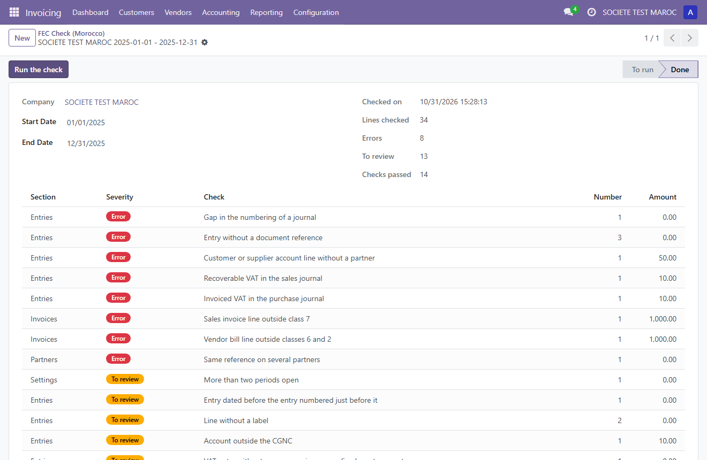

Opinion no. 24 of the Moroccan National Accounting Council (CNC, June 2023) sets the criteria of accounting software and the list of the fields of the FEC (Fichier des Ecritures Comptables). This module looks at your accounting data and lists what would be missing or inconsistent with these criteria and with the Moroccan chart of accounts (CGNC).

The module does not generate the FEC file, and it does not certify that Odoo complies with opinion no. 24. The check helps you prepare your accounting. It does not replace the review of your accountant.
The periods of the opinion are read as months. Accounts are compared with the headings of the chart of the Odoo Morocco localization, plus class 8.
Tested on Odoo Community 18.0 and 19.0, not yet on Enterprise. For Odoo.sh and your own servers. Not available on Odoo Online.
This module is published by Cabinet EL JOUAIDI, a chartered accounting and advisory firm based in Casablanca, Morocco. The firm works with companies on their accounting, tax, social and legal obligations. Its team brings together chartered accountants, statutory auditors and accounting staff, with more than 10 years of experience.
Consulting and services, construction and crafts, retail, hotels and restaurants, medical and paramedical professions, real estate, transport.
The firm is led by Yassine El Jouaidi, chartered accountant and wealth manager, who also chairs DINERGIE, a chartered accounting firm in Paris, France.